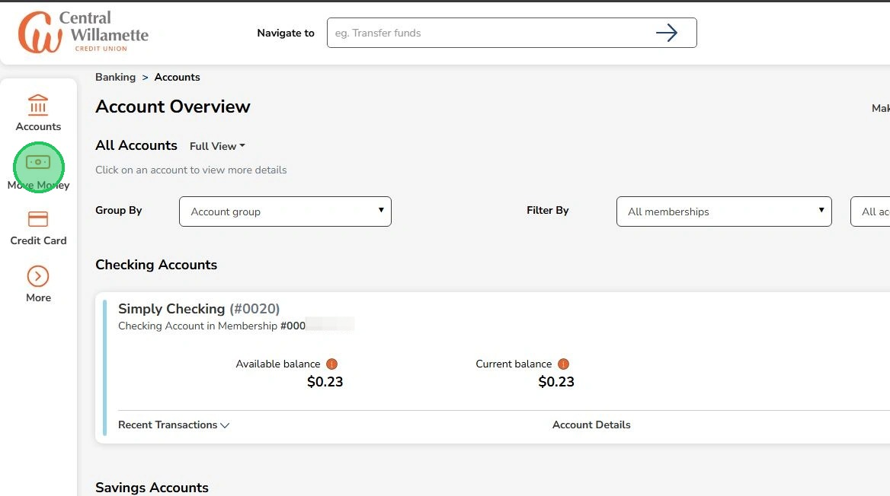
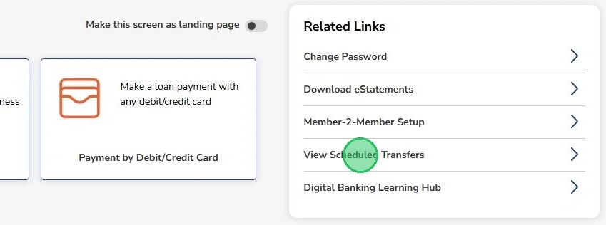
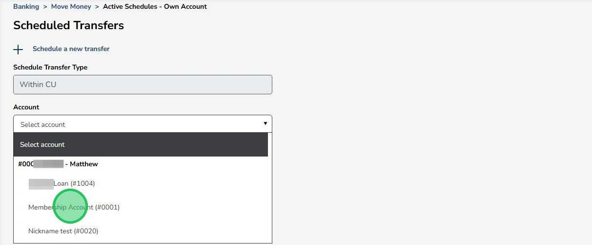
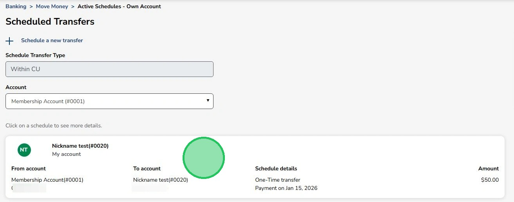
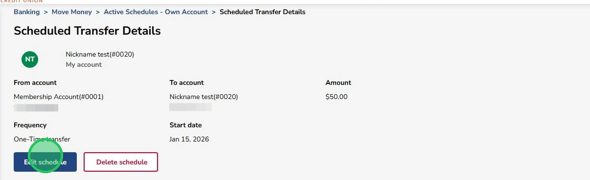
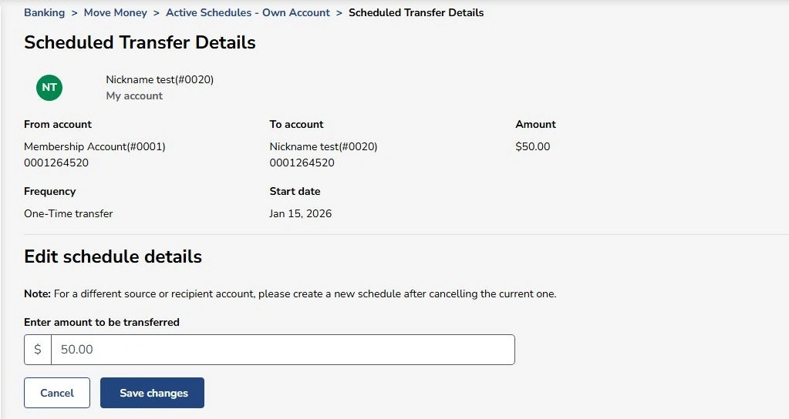
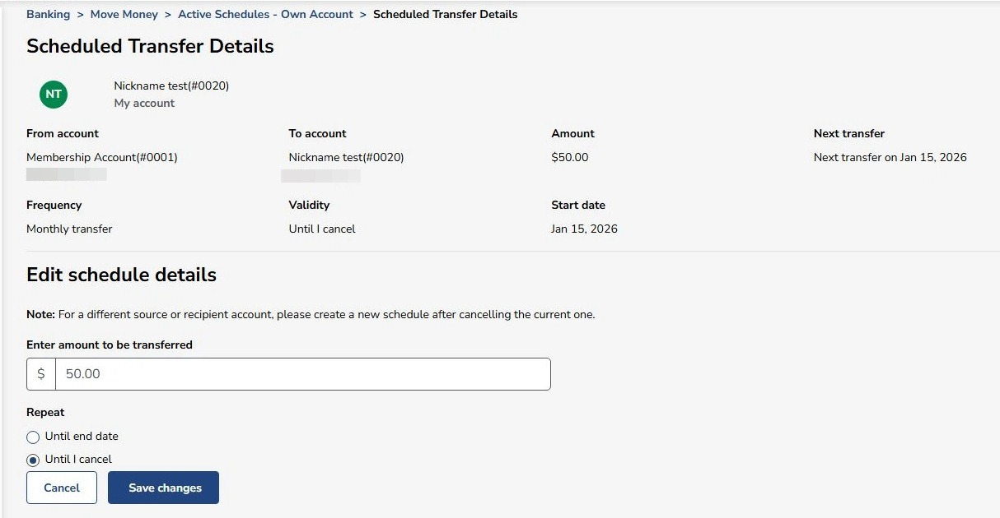
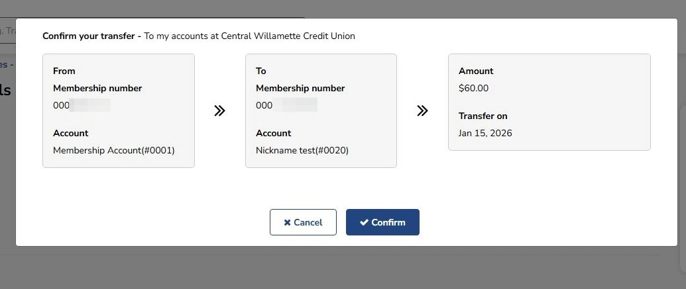

Edit or Delete Scheduled Internal Transfers
This guide will help you edit or delete internal transfers that you have scheduled
1
Click "Move Money"

2
Click "View Scheduled Transfers"

3
Click on the account that the transfer is coming out of

4
Click anywhere in the box to edit or delete the transfer

5
Click "Edit schedule" to adjust the transfer or "Delete schedule" to delete the transfer

6
Since this is a One-Time transfer there is only the option to edit the amount.

7
If the transfer is recurring then the option to adjust when the transfer ends is available. To adjust transfer dates or source/recipient accounts then the transfer will need to be deleted and a new one made.

8
A confirmation window will pop-up to show the changes to the transfer.
